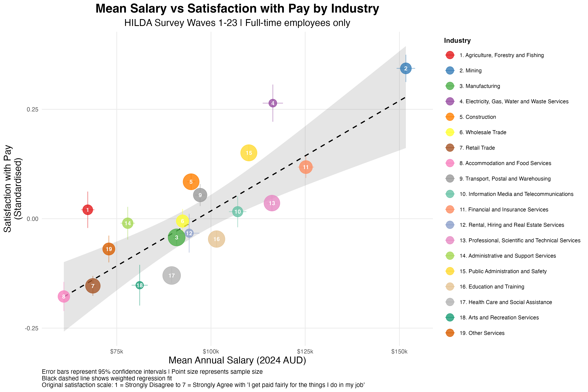

Last week, I posted some findings about the work-related predictors of job satisfaction. One takeaway was that an employee's satisfaction with their pay has a stronger influence on job satisfaction than their actual salary.
I dug a little bit deeper into this relationship between actual salary and satisfaction with that salary across industries. Once again, I used data from the HILDA survey. The sample contained 120,914 observations from 19,244 full-time employees between 2001 and 2023.
In the graph below, each point represents a different industry. The average satisfaction with pay reported in each industry is plotted as a function of the mean salary reported from that industry. The regression line represents the level of satisfaction that would be expected based on the actual salaries in that industry.

As you'd expect, people tend to be more satisfied with their pay in industries where average salary is higher. For example, mining has the highest average salary and also the participants most satisfied with their salaries. The satisfaction-salary correlation is about 0.82, which is quite strong.
But what's more interesting is that in certain industries, satisfaction with pay is not what you'd expect based on the actual salaries. Some industries have higher than expected satisfaction relative to their pay. Agriculture, Forestry and Fishing tops this list. Despite having one of the lower average salaries, workers report much higher satisfaction with their pay. Similarly, Electricity, Gas, Water and Waste Services; Construction; and Admin and Support workers are more satisfied than their salaries alone would predict.
On the other hand, some industries have lower than expected pay satisfaction. Health Care and Social Assistance workers, despite earning an average of $89,570, report lower satisfaction with that salary than we'd expect. The same pattern holds for Arts and Recreation Services and Education and Training. The contrasts are quite striking. Agriculture workers earning $67,310 are more satisfied with their pay than Arts and Recreation workers earning $81,088, despite being paid $14,000 less. Even more pronounced, Education and Training workers earn $34,000 more than Agriculture workers, yet report lower pay satisfaction.
So while salary predicts satisfaction with pay in general, not all industries conform to this trend. There's something unique about each industry beyond just the salary that shapes how workers feel about their pay.